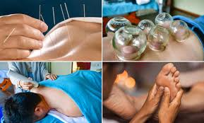
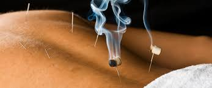

L'Acupuncture Traditionnelle
Harmonisez vos flux d'énergie vitale et libérez les tensions pour retrouver un bien-être global.
L'Art de l'équilibre énergétique
Issue de la Médecine Traditionnelle Chinoise, l'acupuncture consiste à stimuler des points précis du corps pour réguler la circulation du Qi (l'énergie vitale). Une approche holistique qui traite le corps et l'esprit comme un tout.
Équilibre Global
Rétablit l'harmonie entre le corps et l'esprit en dénouant les blocages énergétiques profonds.
Soulagement des douleurs
Idéal pour apaiser les tensions musculaires, les maux de tête et les inconforts chroniques.
Sommeil & Sérénité
Réduit la fatigue et le stress pour retrouver un sommeil réparateur et une paix intérieure.
Mon chemin vers l'Acupuncture
Ma rencontre avec l'acupuncture s'inscrit dans la continuité logique de mon travail avec le cuivre et l'énergie. Fascinée par la façon dont les éléments naturels et les métaux résonnent avec notre corps, j'ai voulu approfondir la compréhension des méridiens humains.
Je me suis formée à cette médecine ancestrale pour offrir un accompagnement complet, où l'écoute du corps est au centre de la démarche. Pour moi, poser une aiguille ou travailler le cuivre relève du même art : celui de canaliser les flux pour redonner vie et équilibre.

Comment se déroule une séance ?
Un moment privilégié de détente et d'écoute pour prendre soin de vous.
Le Bilan Énergétique
Nous commençons par un entretien approfondi pour comprendre vos besoins, vos habitudes de vie et cibler précisément les zones de blocage.
La Pose des Aiguilles
De très fines aiguilles stériles à usage unique sont placées sur des points stratégiques. La pose est douce, indolore et invite immédiatement à la relaxation.
Le Temps de Repos
Vous vous détendez pendant une vingtaine de minutes dans une ambiance calme et musicale pour laisser l'énergie circuler à nouveau.

Besoin de retrouver votre équilibre naturel ?
Réserver ma séance